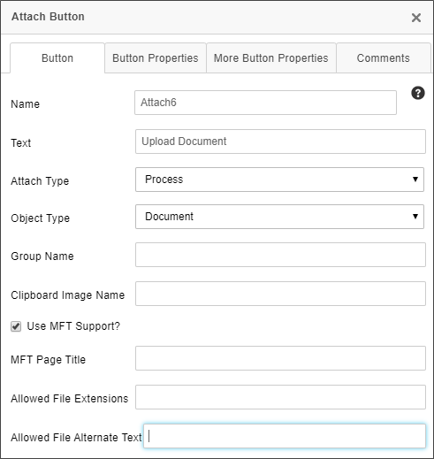
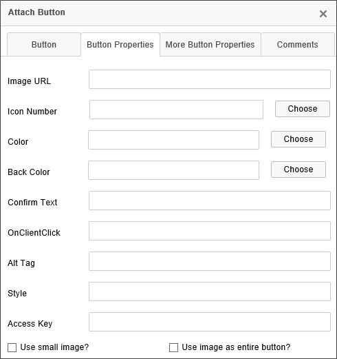
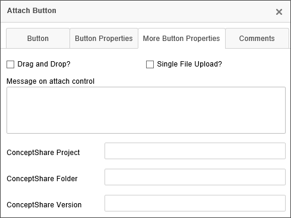

Attach Objects
Attach ObjectsThis control enables users to add document attachments to the Process or Form.
Control Properties
Double clicking the control allows you to access and configure its properties.
As of Apple iOS 6.2, when clicking on the Attach button in Safari or Chrome, iOS will prompt the user to either take a picture or select one to attach from his photo library.
In addition, the attach objects control also allows you to call JavaScript client behaviors. You can specify the JavaScript call you'd like to make by entering it in the OnClientClick property of the control.

The Properties dialog for this control has a number of configurable tabs.
Button Tab
The Button tab is the primary configuration tab for the control, and contains the properties listed below.
Name: The Control Name.
Text: The Text that will appear on the button's label.
Attach Type: Determines to which Process Director object the item will be attached. You can set the item to attach to the following objects:
- Form
- Workflow
- Timeline
- Process
The default selection is "Process".
Object Type: Determines whether the item to be attached is a document/file, or a clipboard image item that will be attached from the machine's clipboard memory. The default is "Document".
 The "Clipboard" selection is largely deprecated, as it requires ActiveX technology that works only with Internet Explorer when the BP Logix plugin is installed, and is running on a 32-bit computer.
The "Clipboard" selection is largely deprecated, as it requires ActiveX technology that works only with Internet Explorer when the BP Logix plugin is installed, and is running on a 32-bit computer.Group Name: The Group Name of the group to which the item will be attached.
 As a best practice, you should always apply Group Names for attachments, even if you only have a single attachment control, or a just a single document to attach. This will make your life much easier if you later want to export just certain documents, or access just certain types of forms in a process, or many other things.
As a best practice, you should always apply Group Names for attachments, even if you only have a single attachment control, or a just a single document to attach. This will make your life much easier if you later want to export just certain documents, or access just certain types of forms in a process, or many other things.Clipboard Image Name: If the attachment item comes from the clipboard, this property will assign a file name to the item. Please see the note in Object Type above for the clipboard's operability.
Use MFT Support?: Selecting this property will enable users to upload multiple files to form asynchronously. When the files are uploading, a separate, pop-up, upload window will appear in the browser. This window MUST remain open for the uploads to complete. Closing prematurely will stop the uploads. In the meantime, while the upload is being completed, you can continue filling out the form without waiting on the uploads. When using this feature, in Process Director v5.12 or higher, the Show Attach control will display the % complete of the uploaded file, and the tooltip with display the last time data was received. This can be used by a user to determine if they accidentally closed the browser window doing the upload, and remove the file and upload again.
Large file uploads may require that you specify a temporary folder for the file during MFT uploads, in lieu of the default temp folder, as sometimes large documents get caught in the temp folder. To alleviate this, you can set the UploadTempPath Custom Variable to the folder you'd like to use for temporary storage.
MFT Page Title: This property enables you to configure the title of the upload window that will be displayed to the user when the file upload begins.
Allowed File Extensions: This property accepts a comma-separated list of file extensions (e.g. docx,xlxs,pdf). At run-time, only files with the specified extensions can be uploaded. Optionally, there is a new Custom Variable called FileUploadBlacklist that also accepts a comma-separated list of file extensions to create a blacklist that will reject all file uploads of the enumerated file types. If no extensions are entered in the Attachment control, then all file types can be uploaded, with the exception of any that may be in the FileUploadBlacklist. For Process Director v5.26 and higher, the allowed file types are displayed to the user when uploading a file attachment.
Allowed File Alternate Text: This property enables you to specify the text you'd like to display to the user when you use the Allowed File Extensions property to restrict file types for upload. This property can be set universally through the use of the FileUploadBlacklistAlternateText Custom Variable.
Button Properties Tab
This tab enables you to configure additional properties for the Attach button.

Image URL: The button can be displayed as an image by providing an accessible image URL to display instead of a standard button. This property will override other button properties below, e.g., Back Color.
Icon Number: You can select an Icon to display on the button from the Icon Chooser dialog box.
Color: You can select the text color to display on the button from the Color Chooser dialog box.
Back Color: You can select the background color to display on the button from the Color Chooser dialog box.
Confirm Text: You can specify confirmation text that will appear as a confirmation dialog box when the button is clicked.
onClientClick: You can specify client-side JavaScript to run on the button's onClientClick event.
Alt Tag: You can specify an ALT tag property for accessibility purposes.
Accessibility Key: You can specify the accessibility keys a user can press to activate the button, for accessibility purposes.
onClientClick: You can specify client-side JavaScript to run on the button's onClientClick event.
Use Small Image?: If you supply an image URL, the image can be displayed as an icon for the button by checking this property.
Use Image as entire button?: You can use the image as the displayed button, rather than displaying a traditional button on the form.
More Button Properties Tab
Additional properties are configured on this tab.

Drag and Drop?: Selecting this property will enable users to drag a file from the file system directly onto the Form to upload it.
Single File Upload?: Selecting this property will restrict each upload to a single file.
Message on Attach Control: You can display a longer message on the attach control, in addition to the button text. This may be useful for supplying instructions, etc., to the user.
ConceptShare Project: Users of ConceptShare can specify a Project to assign to the attachment.
ConceptShare Folder: Users of ConceptShare can specify a Folder to assign to the attachment.
ConceptShare Version: Users of ConceptShare can specify a Version to assign to the attachment.
Form Definition Properties
Additional properties are available for the Attach Objects control in the Form Controls Tab of the form definition. Opening the control's property in the Form Controls tab will display the properties dialog box to access the additional properties.

The relevant properties are:
|
PROPERTY |
DESCRIPTION |
|---|---|
|
Min |
The minimum allowable file size for the attachment, in Kilobytes, e.g., a value of "64" would be a size limit of 64KB. |
|
Max |
The maximum allowable file size for the attachment, in Kilobytes, e.g., a value of "64" would be a size limit of 64KB. |
For Process Director v5.32 and higher, attachments may be added to completed processes. Prior versions do not allow post-completion attachments.